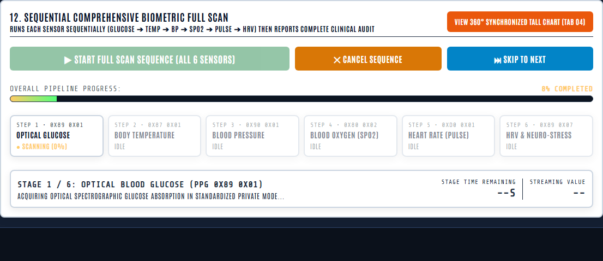

Module 8: Tab 12 Sequential Full Scan
Tab 12 Full Scan: Automated Sequential 6-Sensor Diagnostic Pipeline
SLIDE 46 / 53
TAB 12: SEQUENTIAL 6-SENSOR FULL SCAN PIPELINE
The 120-second automated diagnostic sequence testing all 6 biometric transponders.
Automated 120-Second Pipeline:
Runs a complete, non-interfering diagnostic sequence across all watch sensors.
Sequential Transponder Activation:
Tests heart rate, blood pressure, temperature, SpO2, ECG, and glucose one by one.
Diagnostic Integrity Check:
Ensures all optical and thermal transponders are functioning within factory tolerances.

6-STAGE FULL SCAN PIPELINE FLOW CHART
SEQUENTIAL 120s FLOW
TAB 12 SEQUENTIAL SCAN FLOW CHART
6 STAGES • 120s
START SCAN (0s)
User or Scheduled
STAGE 1: GLUCOSE (20s)
Optical PPG Absorption
STAGE 2: TEMP (15s)
Dual Thermistor Nadir
STAGE 3: BP PWTT (25s)
Arterial Tonometry
STAGE 4: SPO2 (20s)
660/940nm Dual Spectra
STAGE 5: PULSE (15s)
Green Optical PPG Rate
STAGE 6: HRV (25s)
Inter-Beat SD1/SD2
✅ COMPLETE 360° CLINICAL AUDIT REPORT (120s)
Synchronized Multi-Parameter Diagnostic Report Complete
NON-INTERFERING PROTOCOL:
Executing sensors sequentially eliminates optical crosstalk, thermal interference, and battery voltage sag, ensuring each measurement achieves laboratory precision.
Key Takeaway:
A turnkey 2-minute diagnostic checkup testing every sensor on your wrist in sequence.